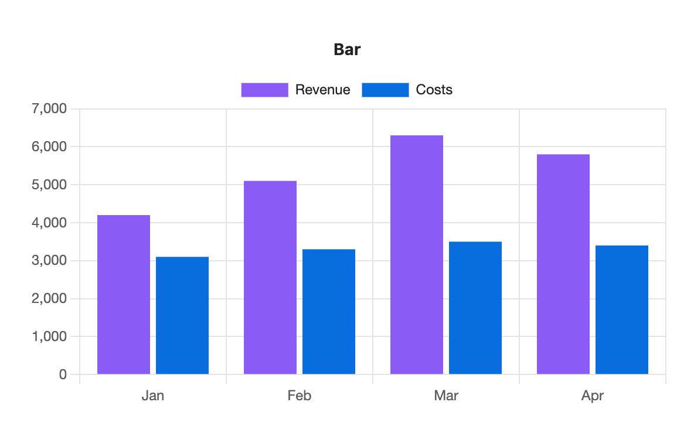
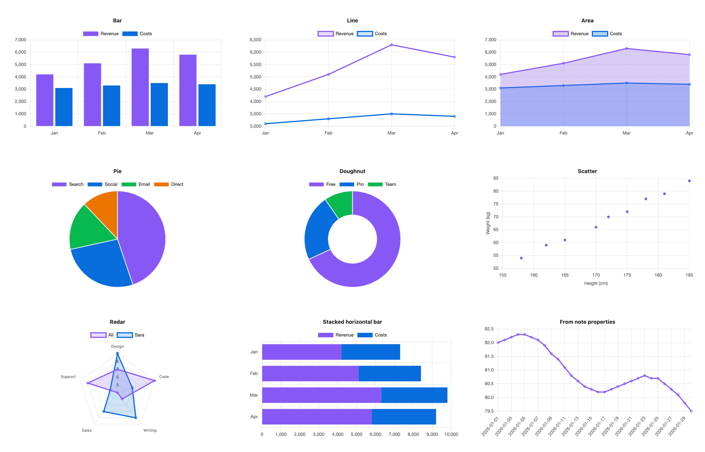

Type a table. Get a chart.
S-Charts is an Obsidian plugin that draws a chart from a markdown table in your note, or from the properties of many notes. It uses your theme's colours and redraws when you switch to dark mode.
```s-chart
type: bar
title: Bar
---
| Month | Revenue | Costs |
| ----- | ------- | ----- |
| Jan | 4200 | 3100 |
| Feb | 5100 | 3300 |
| Mar | 6300 | 3500 |
| Apr | 5800 | 3400 |
```
Chart types
Bar, line, area, pie, doughnut, scatter and radar. Bars can be stacked or turned on their side. Each chart below is drawn by the plugin in Obsidian's default theme.

Install
S-Charts is not in Obsidian's community plugin list yet. Until it is, install it by hand:
- Download
main.js,manifest.jsonandstyles.cssfrom the latest release. - In your vault, make the folder
.obsidian/plugins/s-charts/and put the three files in it. - Restart Obsidian, open Settings → Community plugins, and turn on S-Charts.
- Open a note and run Insert chart from the command palette. A sample chart appears.
It works on desktop and mobile, needs Obsidian 1.5.0 or later, and never connects to the internet.
Write a chart
A chart is a code block with the language s-chart. Settings go above a --- line, and the table goes below it. The first column holds the labels. Every other column is one series, named by its header.
```s-chart
type: line
title: Monthly revenue
legend: bottom
---
| Month | Revenue | Costs |
| ----- | ------- | ----- |
| Jan | 4200 | 3100 |
| Feb | 5100 | 3300 |
| Mar | 6300 | 3500 |
```Settings lines
| Key | What it does |
|---|---|
type | Required. bar, line, area, pie, doughnut, scatter or radar. |
title | Text above the chart. |
palette | A palette you made in settings. |
colors | Hex colours for this chart only: #e11d48, #0ea5e9. |
height | Pixels, 120 to 1200. 300 by default. |
stacked | true stacks bars and areas. |
horizontal | true turns bars on their side. |
legend | top, bottom or none. |
x-label, y-label | Axis titles. |
Numbers
Cells can hold 4200, 4,200, $4,200, KWD 4,200, 42% or -3.5. An empty cell leaves a gap in the line instead of a zero.
Mistakes
A block the plugin can't read shows the line and the problem in place of the chart, for example Line 1: unknown type "bars". Use bar, line, area, pie, doughnut, scatter or radar.
A misspelt key such as pallet gets did you mean palette?
and the chart still draws.
Editing a chart
In live preview, hover over a chart and select the </> button in its top-right corner to see its text again.
Colours and palettes
With nothing set, the first series takes your theme's accent colour and the rest follow the theme's other colours. Axis text, grid lines and the font come from the theme as well, so a chart looks at home in any theme, light or dark.
To use your brand colours, open Settings → S-Charts, select Add palette, give it a name and pick up to 12 colours. Then add palette: brand to a chart, or make it the default palette for every chart. Editing a palette redraws the charts that use it.
Charts from note properties
Leave out the table and point the chart at notes instead. This draws one point per daily note, sorted by date:
```s-chart
type: line
title: Weight
source: "#daily"
x: date
y: weight
```source is a tag or a folder path. y can list several properties, separated by commas. Change a property in any of those notes and the chart updates within half a second.
PDF export and privacy
Charts come out fully drawn and sharp in Obsidian's Export to PDF, scaled to the page.
The plugin runs on your device only. It makes no network requests, collects nothing, and never edits your notes. Your data stays as plain text you can read without the plugin.